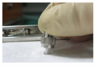

Appendix E Guide to Using Optical Modules
Common Faults of an Optical Module
- An optical module is not completely installed in position.
If the optical module is not completely installed in position and the latch boss is not secured, the device cannot identify the optical module. After the optical module works for a long time, it will be ejected under external stress.
- The optical receptacle on an optical module is contaminated.
If an optical module is not cleaned or protected properly, contaminants may accumulate on the fiber pin in the optical module. As a result, the coupling efficiency is reduced, optical signals are cut off, or even worse, the surface of the fiber pin is damaged permanently.
- An optical module is burnt.
If high-power optical signals are transmitted through an optical module that is used for long-distance transmission but no optical attenuator is used, the receive optical power will exceed the overload power of the avalanche photodiode (APD). Then the optical module is burnt.
The preceding faults lead to temporary or long-term cut-off of optical signals; or even cause permanent damages to the optical module, affecting communication services.
Measures to Prevent a Loosened Optical Module
- When installing an optical module, insert it in position. If you hear a click or feel a slight shake, it indicates that the latch boss is secured.
If the latch boss is not secured, the gold finger of the optical module is not in good contact with the connector on the board. In this case, the link may be connected but optical signals will be cut off or the optical module will be loosened when the optical module is shaken or hit.
- Figure State of the release handle shows the release handle on an optical module when it is open and closed. When inserting the optical module, make sure that the release handle is closed. At this time, the latch boss locks the optical module. After the optical module is inserted, try pulling it out to see if it is installed in position. If the optical module cannot be pulled out, it is secured.
Measures to Prevent Receptacle Contamination
- Cleaning tissues must be prepared on site. You need to clean the optical connector before inserting it in the receptacle. This protects the receptacle against contamination on the surface of the optical connector.Figure 2 Cleaning optical fibers with special cleaning tissues


Place at least three cleaning tissues on the work bench. As shown in Figure Cleaning optical fibers with special cleaning tissues, wipe the end of an optical connector from left to right or from right to left on a cleaning tissue, and then move the connector end to the unused part of the cleaning tissue to continue.
- Cover an unused optical module with a protective cap to prevent dust, as shown in Figure Installing a protective cap.
If no protective cap is available, use fibers to protect the optical module, as shown in Figure Using fibers to protect an optical module.
- Cover unused optical connectors with protective caps, as shown in Figure Installing a protective cap on a fiber, and then lay out fibers on the fiber rack or coil them in a fiber management tray to prevent fibers from being squeezed.
- If a receptacle or an optical connector has not been used for a long time and is not covered with a protective cap, you need to clean it before using it. Clean a receptacle with a cotton swab, as shown in Figure Cleaning a receptacle with a cotton swab. Clean an optical connector with cleaning tissues.
- If optical signals are lost during the operation of a device, use the preceding method to clean the receptacle or the optical connector. In this manner, the possibility of contamination can be excluded.

Measures to Prevent an Optical Module from Being Burnt
- Before using an optical time-domain reflectometer (OTDR) to test the connectivity or the attenuation of optical signals, disconnect the optical fibers from the optical module. Otherwise, the optical module will be burnt.
- When performing a self-loop test, use an optical attenuator. Do not loosen the optical connector instead of the optical attenuator.
Precautions
- The optical connector should be vertically inserted in the receptacle to avoid damages to the receptacle.
- Fibers must be inserted into optical modules of the corresponding type. That is, multimode fibers must be inserted into multimode optical modules, and single mode fibers must be inserted into single mode optical modules. If a fiber is inserted into an optical module of a different mode, faults may occur. For example, optical signals will be lost.